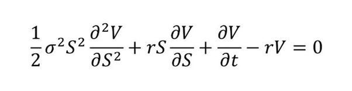

PS: the following text is generated via ChatGPT:
Unpacking The Black-Scholes Model: An Intellectual Odyssey in the Realm of Financial Engineering
The Black-Scholes model, a cornerstone of modern financial theory, plays a pivotal role in the realm of options pricing. An understanding of this model not only casts light on the complex dynamics of financial markets, but also evokes an intricate web of intellectual endeavor that extends beyond the domain of finance. It represents the culmination of centuries of mathematical and scientific progress, embodying a rich tapestry of theoretical constructs from physics, mathematics, and economics. Nevertheless, despite its universal acclaim and widespread application, the model is not without its detractors, and its perceived blind spots have engendered a plethora of criticisms.
The Genesis of The Black-Scholes Model
The Black-Scholes model's development is rooted in the scientific revolution of the 17th century. Its foundation lies in the framework of probability theory, which was formally introduced by Blaise Pascal and Pierre de Fermat during this era. This seminal work was subsequently extended by luminaries such as Jacob Bernoulli, whose law of large numbers provided the mathematical rigor for the concept of expected value, a critical component of option pricing.
The introduction of stochastic processes, specifically the Wiener process (also known as Brownian motion) by Norbert Wiener in the early 20th century, further paved the way for the development of the Black-Scholes model. This mathematical construct, inspired by the seemingly random motion of pollen particles suspended in liquid, was originally employed to model physical phenomena. However, its properties, including continuous paths and independent increments, proved apt for describing the erratic fluctuations of financial markets.
The Birth and Formalization of the Black-Scholes Model
The actual birth of the Black-Scholes model was a momentous convergence of scientific and economic insight. Its parents, economists Fischer Black and Myron Scholes, in collaboration with Robert Merton, sought to devise a formula to calculate the fair price of an option contract. Grounded in the efficient market hypothesis, which postulates that financial markets perfectly reflect all available information, the model was an innovative amalgamation of the previously separate fields of financial economics and applied mathematics.
The Black-Scholes model's theoretical underpinning is the Black-Scholes equation, a partial differential equation derived from the stochastic differential equation describing the evolution of a financial asset's price. This equation, in essence, is an application of Ito's lemma, developed by Kiyoshi Ito, a fundamental theorem in stochastic calculus. The Black-Scholes model assumes a log-normal distribution of asset prices, a premise deeply rooted in the Central Limit Theorem and the work of Carl Friedrich Gauss.
The Black-Scholes formula, which solves the Black-Scholes equation, calculates the price of a European call or put option. It is contingent on variables including the underlying asset's price, the option's strike price, the risk-free rate of return, the time until the option's expiry, and the volatility of the underlying asset's return. This formalization offered a significant advancement in options pricing, and in 1997, Scholes and Merton were awarded the Nobel Prize in Economic Sciences for their work, with Black posthumously acknowledged.
Criticisms and Blind Spots
Despite the model's wide acceptance, its premises have been subjected to scrutiny. Economists such as Eugene Fama and Kenneth French have criticized the assumption of log-normally distributed returns, arguing that asset returns exhibit leptokurtosis (or 'fat tails'). This observation suggests that extreme price movements occur more frequently than predicted by the model, a phenomenon evidenced during the 2008 financial crisis.
Additionally, Nassim Nicholas Taleb argues in "The Black Swan" that the model's assumptions overlook rare, high-impact events, thereby underpricing risk. Similarly, Benoit Mandelbrot's work on fractal geometry and power-law distributions suggests that financial markets exhibit 'wild randomness', which is inadequately captured by the Gaussian assumption.
Moreover, the presumption of constant volatility has been contested. Economists Robert Engle and Tim Bollerslev developed models (ARCH/GARCH) that account for changing volatility over time (volatility clustering), a common feature of financial markets.
The efficient market hypothesis, the cornerstone of the Black-Scholes model, has been challenged by the emergence of behavioral finance. Scholars such as Richard Thaler and Daniel Kahneman contend that investors often act irrationally, violating the rationality assumption intrinsic to the model.
Conclusion
While the Black-Scholes model's limitations have been exposed, it remains an influential framework in financial engineering. The evolution of the model, echoing the words of Isaac Newton, truly stands on the "shoulders of Giants". Its lineage can be traced through the annals of science and mathematics, encompassing the works of luminaries such as Pascal, Bernoulli, Wiener, and Ito, to name but a few.
However, the model's assumptions have come under increasing scrutiny, and its inability to capture certain features of financial markets has engendered a wave of criticism. Future progress will invariably build upon, revise, and perhaps transcend the model, continuing the grand tradition of scientific advancement.
The journey of understanding and application of the Black-Scholes model thus presents a fascinating case study in the philosophy of science, demonstrating the iterative process of knowledge accumulation, the application of theory to practical problems, and the continual refinement of our models in the face of empirical evidence and theoretical critique. In this light, the Black-Scholes model serves as an icon of not just financial engineering, but also the evolution of scientific epistemology.